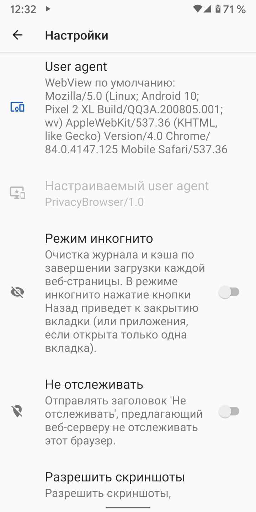

При подключении браузера к веб-сайтам происходит отправка пользовательского агента, который идентифицирует браузер и возможности визуализации, которыми он обладает. Веб-сервер может использовать эту информацию, чтобы решить, какую версию сайта отправить в браузер. Например, многие сайты имеют разные версии для компьютерных и мобильных браузеров.
По умолчанию Clear Browser использует собственный пользовательский агент ClearBrowser/1.0. На веб-сервер отправляется минимум информации.
Поскольку веб-серверы не распознают его пользовательским агентом мобильного телефона, они обычно отображают версию сайта для компьютера.
Для сравнения, пользовательский агент WebView по умолчанию раскрывает большой объем информации об аппаратном и программном обеспечении устройства. В меню Настройки выберите WebView по умолчанию, поскольку User agent отображает пользовательский агент, который будет отправлен. На скриншоте ниже показан Pixel 2 XL под управлением Android 10 с установленным Android WebView 84.0.4147.125. Большинство веб-серверов признают это как мобильный браузер и будут отображать мобильную версию сайта, если таковая имеется.
В пользовательском агенте достаточно информации о том, что иногда только несколько посетителей веб-сайта будут выглядеть одинаковыми. Если пользовательский агент сочетается с другой частью неуникальной идентифицирующей информации, часто это приводит к уникальному отпечатку браузера. Фонд Electronic Frontier Foundation создал инструмент под названием Panopticlick, чтобы продемонстрировать, сколько информации можно извлечь из этих источников. Если этот тест выполняется с включенным JavaScript, объем информации, которая раскрывается, значительно увеличивается. Browser Leaks и Am I Unique также являются хорошими источниками информации по этой теме.

Существует несколько предустановленных пользовательских агентов, которые соответствуют обычным браузерам и операционным системам.
Для использования отпечатков браузера существует правило - все, что редко встречается, легче отслеживать.
По мере распространения Clear Browser использование ClearBrowser/1.0 в качестве пользовательского агента станет хорошим выбором для обеспечения конфиденциальности.
Firefox или Chrome являются наиболее распространенными пользовательскими агентами, но они автоматически обновляются и их номера версий меняются настолько быстро, что,
скорее всего, пользовательские агенты, включенные в Clear Browser, часто будут не соответствовать большинству пользовательских агентов в журналах сервера.
Некоторые сайты работают неправильно, если они не распознают пользовательский агент. Использование параметров домена для установки агента пользователя WebView по умолчанию, или другого пользовательского агента, который корректно распознается, обычно решает проблему. Android WebView не позволяет пользовательскому агенту быть пустым. В этом случае WebView отправляет на сервер пользовательский агент по умолчанию.